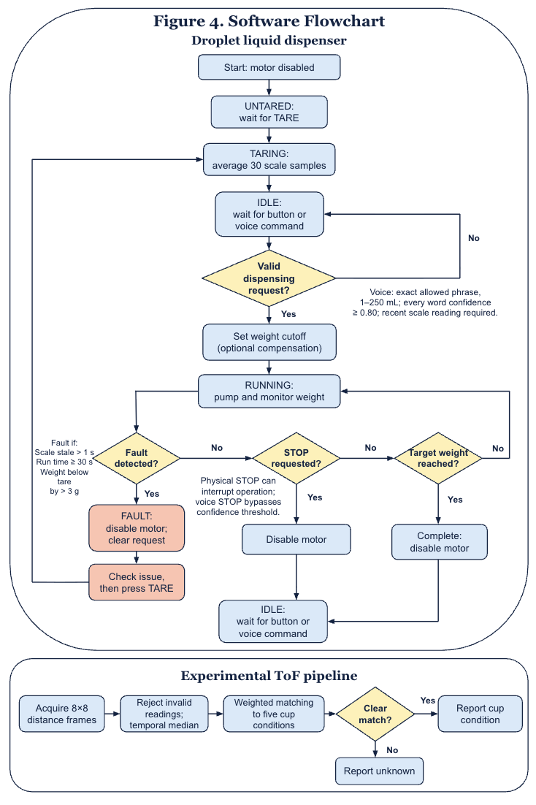

← Project overview and results · Report, CAD, code, and parts list
Hardware implementation
- Control: Raspberry Pi 5, 4 GB
- It reads the buttons, interprets input from the sensors and microphone, controls the pump, and determines when dispensing should start and stop. This was the version I had on hand.
- Pump: NEMA 17 stepper motor and 3D printed pump
- The peristaltic pump squeezes liquid through food-grade silicone tubing. My pump has a spacer that allows me to adjust for different sized tubing, and it uses bearing stacks to roll along the tube and push the liquid through.
- Weight scale: load cell and HX711
- The weight scale measures the amount of water added. The load cell is secured with 3D printed parts and is calibrated using a 100 g weight.
- Experimental level sensing: VL53L5CX
- The sensor measures distance using an 8×8 array of sensing zones. Because of its low resolution and difficulty detecting thin cup rims, it is mounted above the cup and tilted 30 degrees from horizontal. Water-level detection is not reliable yet.
- Inputs: buttons and microphone
- The design has three preset quantity buttons, plus tare and stop. A KISEER USB microphone connects directly to the Raspberry Pi.
Software implementation
The software uses a finite-state machine to coordinate the user commands.
- Untared: The scale has yet to be zeroed.
- Taring: The scale averages 30 readings to establish the baseline.
- Idle: The system is ready and waiting for a command.
- Running: The pump runs while the system checks the weight to see if the target is reached.
- Fault: The pump stops because an error occurred.
The running state is only allowed after the scale has been tared, which prevents the device from dispensing against an unknown baseline. Separate threads handle motor pulses and voice recognition, allowing these functions to operate alongside continuous scale monitoring.
Measuring the amount added
The HX711 readings are converted into grams through a calibration factor. When taring, the program averages 30 samples to reduce random fluctuations. During dispensing, the controller calculates added mass relative to the reading from before the command was registered. An experimental linear overshoot-compensation model adjusts the cutoff because of scale-to-motor latency and water dripping after the motor stops.
Offline voice recognition
Offline speech recognition uses Vosk with a restricted vocabulary that only accepts specific commands and numbers within the dispensing range. The system reports a confidence score for each word it recognizes, and a dispensing command is only accepted if its word confidence is at or above 80%. Restricting recognized vocabulary helps to avoid confusion with background noises or conversations.
Experimental water-level classification
The time-of-flight sensor’s 8×8 distance grid is processed with a filter. It first rejects readings without a detected target or with invalid data. A temporal median filter combines repeated measurements to reduce fluctuation. Each validation capture contains 30 frames, and a zone is retained only if at least 60% of its readings are valid.
The final grid is classified using weighted nearest-example pattern matching against recorded examples of no cup, empty cup, lower water, middle water, and stop level. The algorithm also evaluates small horizontal and vertical shifts to accommodate differences in positioning. Weak or ambiguous matches are given the “unknown” label.
Current limitation: In one saved validation run, all three no-cup trials were correct, but the empty cup returned “unknown.” I can’t give an overall accuracy percentage or claim reliable overflow prevention.
